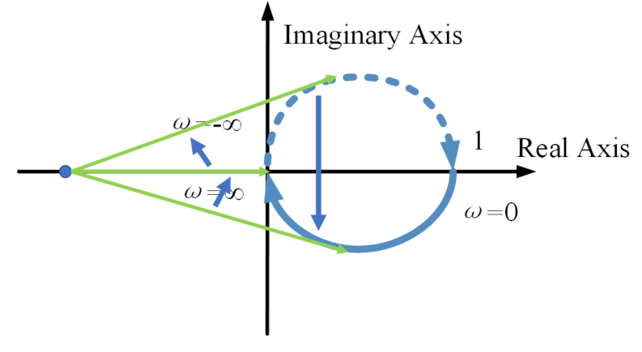
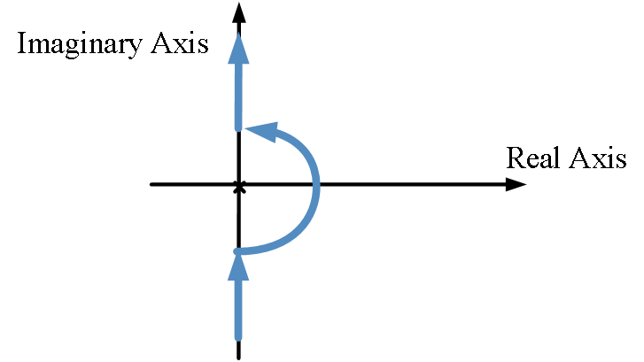
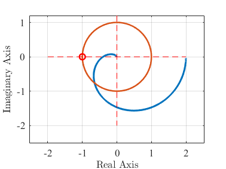

5.3 频域稳定性分析
本章主要介绍线性系统频域稳定性分析的基本原理和方法，重点讲解奈奎斯特稳定判据、对数频率稳定判据、频域稳定裕度、最小相位系统以及映射定理等核心内容。频域稳定性分析是控制系统分析和设计的重要工具，能够直观判断系统的稳定性和稳定裕度。
本章学习目标
- 理解频域稳定性分析的基本概念和原理
- 掌握奈奎斯特稳定判据的几何意义和应用方法
- 掌握对数频率稳定判据的判据条件和应用
- 理解频域稳定裕度的定义和工程意义
- 掌握最小相位系统的概念和特点
- 理解映射定理在稳定性分析中的应用
- 能够应用频域方法分析系统稳定性
章节内容概述
5.3.1 频域稳定性分析概述
5.3.2 奈奎斯特稳定判据
5.3.3 对数频率稳定判据
5.3.4 频域稳定裕度
5.3.5 最小相位系统
5.3.6 映射定理
5.3.7 实践练习与小结
笔记说明：本笔记基于PPT内容整理，补充了必要的公式推导和解释说明，确保内容完整性。
5.3.1 频域稳定性分析概述
稳定性回顾
线性系统的稳定性由传递函数的极点决定：
- 开环特征多项式：
- 闭环特征多项式：
- 闭环传递函数：
- 开环（回路）传递函数：
稳定性分析的基本问题
已知开环极点分布，如何利用开环频率特性判断闭环极点分布？
相角增量概念
考虑复平面左右不同极点/零点位置相角的变化量：
- 左半平面极/零点：
- 右半平面极/零点：
几何表示
对于复平面上一个封闭曲线：
- 相对于曲线外部某点的相角变化为0
- 相对于闭合曲线内部的点，顺时针为，逆时针为

5.3.2 奈奎斯特稳定判据
奈奎斯特稳定判据的基本原理
奈奎斯特稳定判据（几何判据）：若开环传递函数奈奎斯特图逆时针包围的圈数等于开环右半平面极点的个数，则闭环系统稳定。
数学表达式
设：
- ：闭环正极点个数
- ：开环正极点个数
- ：开环奈奎斯特曲线逆时针绕的圈数
则系统稳定的充要条件为：
判据应用
-
开环系统稳定（）：
- 开环奈奎斯特图不包含点
- 幅角增量为0
- 闭环稳定
-
开环系统有个正极点（）：
- 开环奈奎斯特图逆时针绕 圈
- 幅角增量为
- 闭环稳定
米哈伊洛夫稳定判据
米哈伊洛夫稳定判据：若已知闭环的特征多项式，当零频时特征多项式不为零，若米哈伊洛夫曲线沿逆时针方向绕原点的圈数等于开环右半平面极点的个数，则闭环系统稳定。
米哈伊洛夫曲线：特征多项式的幅相特性（闭环特征多项式的奈奎斯特图）
两种判据的比较
| 区别 | 奈奎斯特稳定判据 | 米哈伊洛夫稳定判据 |
|---|---|---|
| 对象 | 开环系统的传递函数 | 闭环系统的特征多项式（） |
| 途径 | 奈奎斯特图（幅相特性，极坐标图） | 米哈伊洛夫曲线（幅相特性，极坐标图） |
| 关键点 | ||
| 判据参考 | 开环右半平面极点的个数 | 开环右半平面极点的个数 |
| 闭合曲线 | 逆时针绕关键点的圈数等于 | 逆时针绕关键点的圈数等于 |
| 开放曲线 | 逆时针绕关键点的圈数等于 | 逆时针绕关键点的圈数等于 |
注意：米哈伊洛夫判据需要对开环传递函数进行处理，且要求，奈奎斯特判据可以直接采用开环传递函数判断闭环稳定性，应用更加方便。
特殊情况的处理
开环传递函数在虚轴上有零点或极点
当系统型别大于0时，开环传递函数在虚轴上有极点（如），需要特殊处理：
- 构建"D"型围线绕过虚轴上的极点
- 计算奈奎斯特图时考虑无穷小半圆的映射

5.3.3 对数频率稳定判据
对数频率稳定判据的基本原理
对数频率稳定判据：若开环系统为最小相位的稳定系统，其伯德图满足如下条件之一，则闭环系统稳定：
- 在幅值穿越频率时，系统相角大于
- 在相角穿越频率时，系统幅值小于1（0 dB）
- 系统的幅值穿越频率小于相角穿越频率
关键概念
- 幅值穿越频率 ：（0 dB）对应的频率
- 相位穿越频率 ：对应的频率
判据的几何解释
在伯德图上：
- 负实轴：对应相频特性线
- 单位圆：对应幅频特性0 dB线
判断方法：
- 查看 dB处频率的相位是否大于
- 如果大于，相位穿越频率为右侧首次越过处的频率
- 如果小于，相位穿越频率为左侧末次越过处的频率
适用条件
对数频率稳定判据仅适用于最小相位系统（开环系统无正零点）。对于非最小相位系统，不能直接采用对数稳定判据进行稳定性分析，但奈奎斯特稳定判据仍然适用。
5.3.4 频域稳定裕度
稳定裕度的概念
相对稳定性：系统距离失稳还有多少裕度，反映系统稳定性的程度。
物理意义：
- 冲击响应扩幅到什么程度，系统不满足渐进稳定性的条件
- 系统极点向右平移多少，右半平面出现极点
相角裕度
定义：开环传递函数在幅值穿越频率处，相频特性距的相位差值，称为相角裕度。
数学表达式：
物理意义：在处，系统相位滞后，闭环系统达到临界稳定。
幅值裕度
定义：开环传递函数在相角穿越频率处，幅频特性的倒数，称为幅值裕度。
数学表达式：
物理意义：在处，系统增益扩大倍后，闭环系统达到临界稳定。
裕度的正负意义
- 相角裕度：表示系统稳定，表示系统不稳定
- 幅值裕度：（）表示系统稳定，（）表示系统不稳定
工程设计要求
一般设计要求（同时考虑）：
- 相角裕度：
- 幅值裕度：（6 dB）

5.3.5 最小相位系统
最小相位系统的定义
最小相位系统：开环传递函数没有正零点的系统。
非最小相位系统：开环传递最小相位系统的特性：在给定的幅频特性情况下，其相移最小的系统。
最小相位系统的特点
-
频域特性：
- 在保持幅频响应不变的情况下，相移最小
- 系统的零点位于复平面左半平面
-
时域特性：
- 非最小相位系统必然出现负超调
- 两个系统并联，其中与变化率相关的分量具有负增益（"对着干"）
时延环节与非最小相位系统
时延环节具有类似的频率特性：幅值不变，相角滞后。具有开环正零点或者延时环节的系统为非最小相位系统。
与的关系
开环传递函数与之间存在以下关系：
-
伯德图：
- 幅频特性一致
- 相频特性上下移
-
奈奎斯特图：
- 关于原点对称
-
闭环稳定性：
- 具有差异性
- 可以视为不同的反馈结构
对数频率稳定判据的适用性
对于非最小相位系统：
- 奈奎斯特稳定判据适用
- 对数频率稳定判据不适用
原因：在推导对应关系时，已经暗含开环系统为系统（0频对应的相位为）。
5.3.6 映射定理
映射定理的基本原理
映射定理：已知为复平面上的有理映射，具有有限个零点和极点。已知原平面上不通过任何零、极点的任意封闭曲线。若该曲线包围的个零点和个极点，当以顺时针方向沿封闭曲线移动1周时，则像平面内的像轨迹以顺时针方向绕原点旋转圈。
数学表达式
设：
- ：封闭曲线包围的零点个数
- ：封闭曲线包围的极点个数
- ：像轨迹绕原点的圈数（顺时针为正）
则：
映射定理的应用
-
原平面到像平面的映射：
- 原平面内的一条封闭曲线，在像平面内仍为封闭曲线
- 奈奎斯特图即为传递函数映射下虚轴的像
-
稳定性分析：
- 构建"D"型围线包围右半平面
- 通过映射定理分析闭环稳定性
基于映射定理的奈奎斯特稳定判据推导
设：
- ：闭环正极点的个数（的正零点个数）
- ：开环正极点的个数（的正极点个数）
根据映射定理：
- 的奈奎斯特图顺时针绕原点圈
- 的奈奎斯特图顺时针绕 圈
即：
整理得：
重要结论：只要开环奈奎斯特图顺时针包围，闭环必然不稳定。
5.3.7 实践练习与小结
练习 5.3.1：奈奎斯特稳定判据应用
已知单位负反馈系统的开环传递函数为：
求满足闭环系统稳定的参数的取值范围。
解答：
- 系统分析：开环系统稳定（），需要
- 绘制奈奎斯特图：
- 起点：，
- 终点：，
- 与实轴交点：令，解得，
- 稳定性条件：奈奎斯特图不包围点
- 当时，不包围
- 解得：
- 结论：
练习 5.3.2：对数频率稳定判据应用
已知单位负反馈系统的开环传递函数为：
求满足闭环系统稳定的参数的取值范围。
解答：
- 系统分析：最小相位系统，可用对数频率稳定判据
- 绘制伯德图渐近线：
- 转折频率：，
- 低频斜率： dB/dec
- 稳定性条件：
- 在幅值穿越频率时，系统相角大于
- 计算相角裕度：
- 参数范围：通过计算可得
练习 5.3.3：稳定裕度计算
已知单位负反馈系统的开环传递函数为：
计算系统的相角裕度和幅值裕度。
解答：
-
幅值穿越频率：
解得： rad/s
-
相角裕度：
解得： rad/s
-
幅值裕度：
-
结论：，，系统不稳定。
练习 5.3.4：最小相位系统判断
判断以下系统是否为最小相位系统：
解答：
- ：零点（左半平面），无正零点，是最小相位系统
- ：零点（右半平面），有正零点，是非最小相位系统
- ：含有时延环节，是非最小相位系统
- ：零点（左半平面），无正零点，是最小相位系统
练习 5.3.5：综合设计
已知单位负反馈系统的开环传递函数为：
设计要求：
- 系统稳定
- 相角裕度
- 幅值裕度（6 dB）
求满足要求的参数的取值范围。
解答：
-
稳定性分析：
- 特征方程：
- 劳斯表：
| | 1 | 5 |
| | 6 | |
| | | 0 |
| | | | - 稳定条件：
-
相角裕度条件：
- 相频特性：
- 需要
- 即
- 解得： rad/s
-
幅值裕度条件：
- 相位穿越频率：
- 解得： rad/s
- 幅值裕度：
- 代入：
- 解得：
-
综合条件：
- 稳定性：
- 相角裕度： ⇒
- 幅值裕度：
- 取交集：
-
验证：取，验证满足所有要求。
5.3.8 小结与总结
核心概念总结
频域稳定性分析方法
- 奈奎斯特稳定判据：基于开环奈奎斯特图包围点的情况判断闭环稳定性
- 对数频率稳定判据：基于伯德图的幅值穿越频率和相位穿越频率关系判断稳定性
- 频域稳定裕度：相角裕度和幅值裕度，定量描述系统稳定性程度
- 最小相位系统：无正零点的系统，具有最小的相位滞后
- 映射定理：复平面映射的基本原理，奈奎斯特判据的理论基础
关键参数定义
- 幅值穿越频率：（0 dB）对应的频率
- 相位穿越频率：对应的频率
- 相角裕度：
- 幅值裕度：或
重要方法总结
稳定性判断步骤
-
奈奎斯特判据：
- 绘制开环奈奎斯特图
- 计算逆时针包围的圈数
- 与开环正极点个数比较
-
对数频率判据：
- 绘制开环伯德图
- 确定幅值穿越频率和相位穿越频率
- 检查判据条件
-
稳定裕度计算：
- 计算幅值穿越频率
- 计算相角裕度
- 计算相位穿越频率
- 计算幅值裕度
系统设计考虑
- 稳定性要求：系统必须稳定
- 性能要求：足够的稳定裕度保证鲁棒性
- 参数选择：在稳定范围内选择满足性能要求的参数
设计权衡与工程考虑
稳定性与性能的矛盾
- 增益选择：增益越大，响应越快，但稳定性越差
- 裕度要求：裕度越大，系统越稳定，但响应可能变慢
- 鲁棒性：足够的裕度保证系统对参数变化的鲁棒性
工程经验
- 相角裕度：通常要求
- 幅值裕度：通常要求（6 dB）
- 设计顺序：先保证稳定性，再优化性能
经验法则
- 最小相位系统：可用对数频率判据简化分析
- 非最小相位系统：必须用奈奎斯特判据
- 虚轴极点：需要特殊处理，构建"D"型围线
关键公式回顾
奈奎斯特判据
- 稳定条件：
- 闭环正极点：
稳定裕度
- 相角裕度：
- 幅值裕度：，
映射定理
- 像轨迹圈数：
工程应用价值
- 系统分析：快速判断系统稳定性和稳定裕度
- 控制器设计：根据稳定裕度要求设计控制器参数
- 鲁棒性评估：评估系统对参数变化的敏感度
- 故障诊断：通过频率特性变化诊断系统故障
- 性能优化：在稳定范围内优化系统性能
常见错误与注意事项
- 判据适用条件：对数频率判据仅适用于最小相位系统
- 虚轴极点处理：系统型别大于0时需要特殊处理
- 裕度计算：注意相角裕度和幅值裕度的正负意义
- 频率单位：注意的单位是rad/s
- 相角范围：注意相角的主值范围（通常）
学习建议
- 理论与实践结合：通过MATLAB绘制奈奎斯特图和伯德图，验证理论分析
- 多做练习：通过大量练习掌握各种类型系统的稳定性分析方法
- 理解物理意义：不仅记住判据公式，更要理解物理意义
- 系统思维：从整体角度理解稳定性与系统性能的关系
- 工程思维：培养在实际工程中应用频域稳定性分析的能力